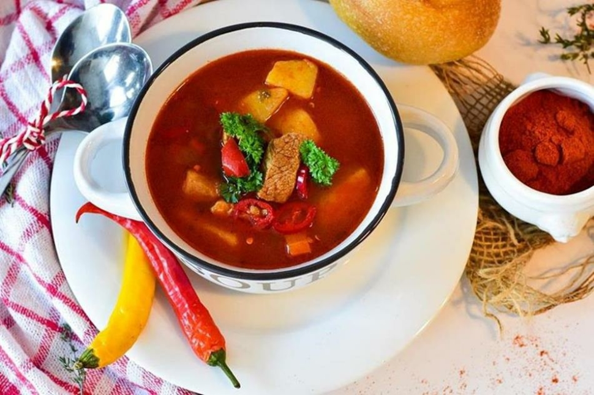
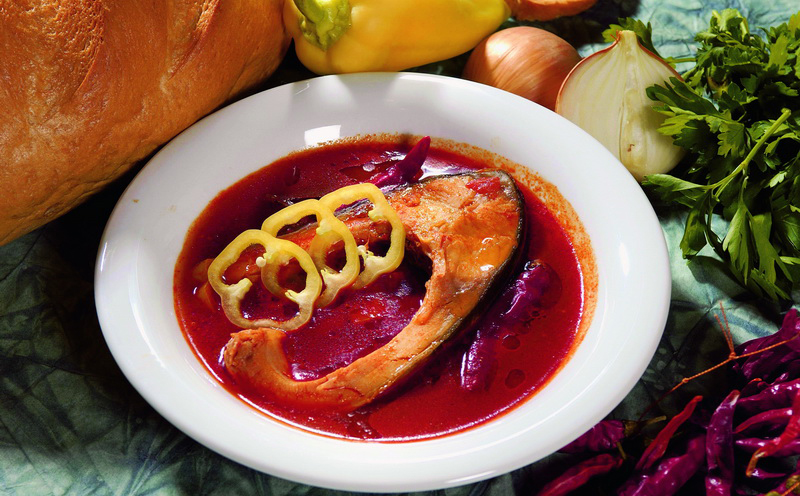
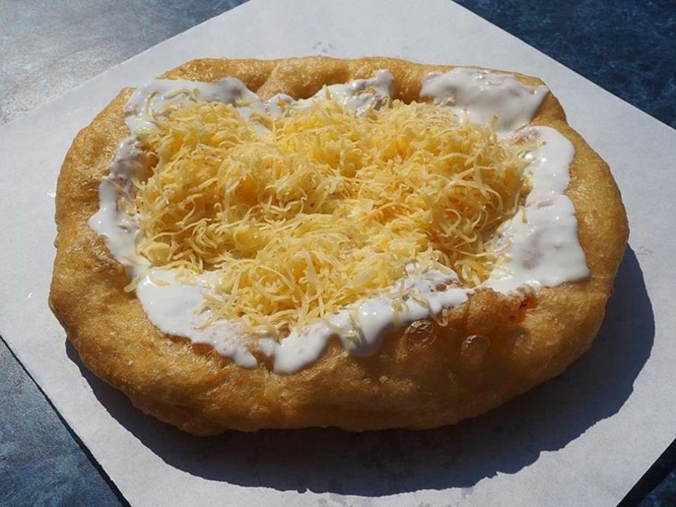
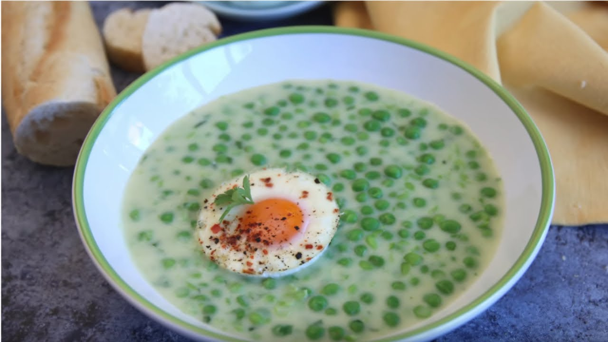
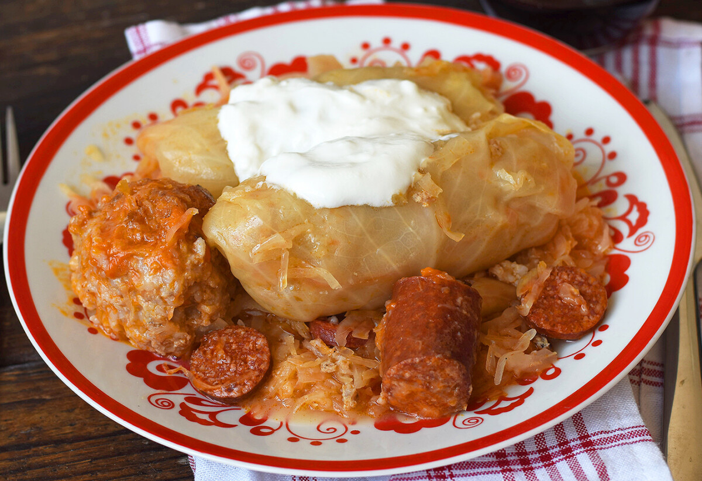
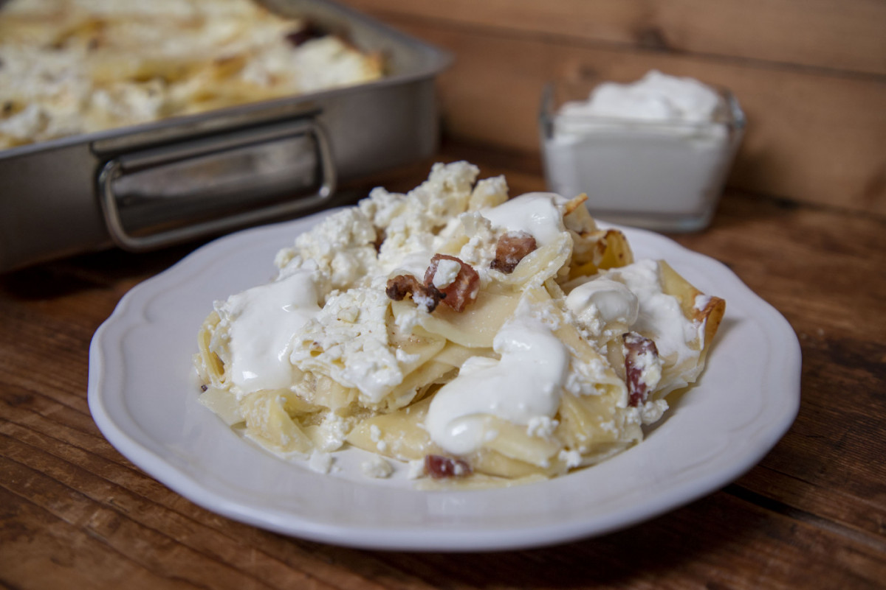
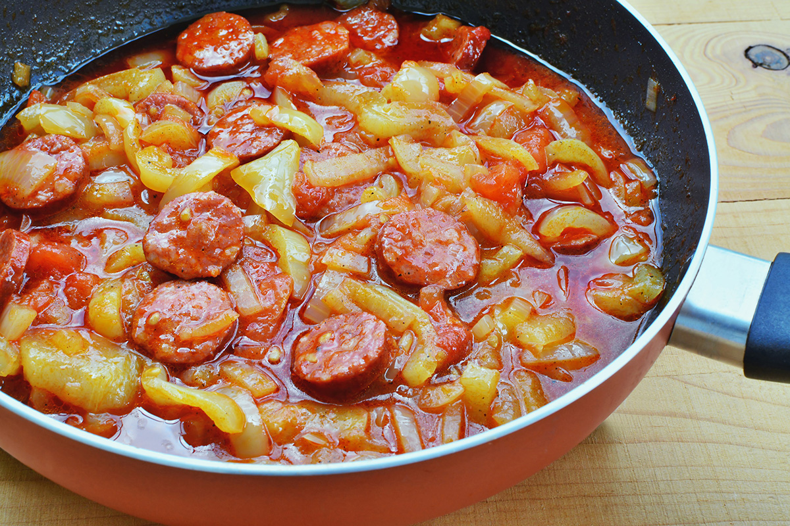
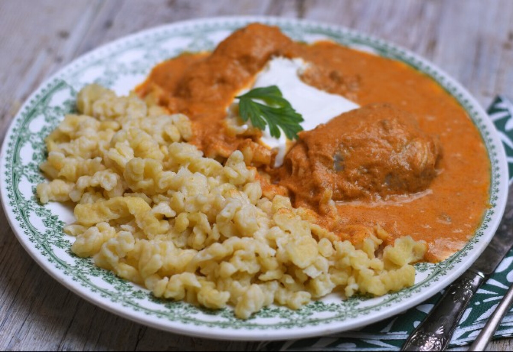

Gulyás
A gulyás nagyon népszerű magyar leves. Nagy marhahúsdarabokat, krumplit, zöldségeket, egy kevés paprikát és csípőset tartalmaz.
ElkészítéseHalászlé
Hagyományos magyar halászlé, ami paprikával ízesített halléből és vastag folyami halszeletekből áll. Annak ellenére, hogy meglehetősen egyszerűnek tűnik, nagyon finom. A halászlevet hagyományosan a szabadban készítik, frissen fogott halból.
ElkészítéseLángos
Egy tányér méretű sült tészta, amire tejfölt és sajtot halmoznak. Extra feltétként szolgálhat a fokhagyma, de manapság már ha egy igazi kalóriabombát szeretnénk, nutellás lángost is árulnak.
ElkészítéseBorsófőzelék
A főzelékek általában úgy készülnek, hogy sós lében megfőzik a zöldséget, a levet besűrítik, majd sóval és fűszerekkel ízesítik. A sűrítés történhet habarással és rántással, illetve saját levének elfőzésével. A borsófőzelék finom. Főleg fasírttal!
ElkészítéseSomlói galuska
Mi ez: Egy három különböző piskótából álló desszert (sima, diós, csokis), mazsolával és dióval, megbolondítva egy kis étcsokoládé öntettel, a tetején tejszínhabbal. Nagyon csokis, nagyon sütis.
ElkészítéseTöltött káposzta
Nagy káposztalevelek hússal és rizzsel töltve, megfőzve, tejföllel leöntve. Ez egy hagyományos, ízletes magyar étel. Ráadásul a káposztát gyakran savanyítják, ami még emlékezetesebb ízt kölcsönöz az ételnek.
ElkészítéseTúrós csusza
Lapos, széles tészta magyar túróval összekeverve, amelyre gyakran sült szalonnát szórnak. Szereted a tésztákat? Szereted a túrót? Nos, ez kell neked. Ha húsevő vagy, a szalonna a finom ráadás.
ElkészítéseLecsó
A paprikás lecsó hagymából, paradicsomból, paprikából áll, de van aki tesz még bele kolbászt és tojást is. Tápláló és egészséges étel a többi magyar étellel összehasonlítva; a lecsót amilyen könnyű elkészíteni, olyan gazdag ízekben.
ElkészítésePörkölt nokedlivel

A pörkölt húsból (gyakran marhából vagy zúzából készítik), paradicsomból, paprikából és hagymából készül, a magyar „nudlival”, azaz a nokedlivel tálalják. A pörköltet gyakran a szabadban, bográcsban főzik. A szabadban főtt pörkölt egy finom kenyérrel, némi borral a remek társaság alapja.
ElkészítésePaprikás csirke
Talán Magyarország egyik legismertebb (köszönhetően a When Harry Met Sally című filmnek), a paprikás csirke egy krémes, fűszeres étel, amit meglepő módon gyakran tejföllel esznek. Egy forró, pikáns, húsos finomság, amit általában nokedlivel (gombóccal) tálalnak
Elkészítése